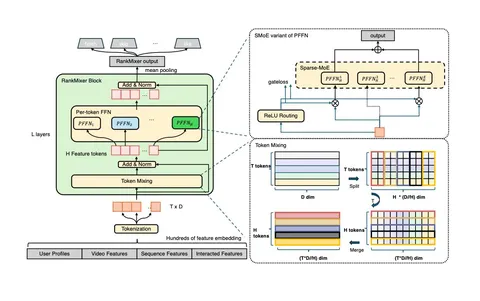

Сегодня разберём статью от ByteDance. Авторы предлагают модель RankMixer, новую масштабируемую архитектуру ранжирования для индустриальных рекомендаций.
Современные ранжирующие модели часто плохо используют GPU. Многие подходы исторически оптимизировались под CPU, из-за чего GPU-утилизация остаётся низкой. Авторы хотят повысить MFU (Model FLOPs Utilization) — то, насколько эффективно модель использует вычисления.
RankMixer позиционируется как продолжение линейки работ по deep learning в рекомендациях: Wide&Deep, DeepFM, DCNv2 и других моделей, развивающих feature interactions.
Архитектура
На вход подаются гетерогенные признаки: профиль пользователя, профиль видео, видеофичи и сигналы взаимодействий. Раньше такие взаимодействия часто учитывались либо неэффективно, либо через простые схемы вроде конкатенаций. Поэтому в RankMixer предложили другую структуру.
Сначала все признаки переводятся в token-based-представление, то есть представляются токенами одинаковой размерности. На входе получается матрица T×D, где T — число токенов, а D — их размерность.
Дальше токены подаются в RankMixer block, который состоит из двух частей:
- Multi-head Token Mixing,
- Per-token FFN (PFFN).
В Multi-head Token Mixing каждый токен разбивается на H голов, чтобы смешивать разные семантические фрагменты и лучше учитывать гетерогенность признаков.
Смешивание происходит через конкатенацию: для каждой головы берётся соответствующая часть всех токенов и собирается новая матрица. Так учитываются взаимодействия и внутри токенов, и между разными группами признаков.
Дальше идёт Per-token FFN, где каждый токен обрабатывается индивидуально. По сути это feed-forward-слой, но применяется он отдельно для каждого токена.
В PFFN также используют Sparse Mixture-of-Experts (MoE). Это позволяет увеличивать capacity модели без такого же роста флопсов: вместо одного FFN берут набор экспертов, и для каждого токена активируют только часть из них.
В статье отдельно обсуждают проблему dying experts, когда работают только несколько доминирующих экспертов. Для борьбы с этим используют routing-стратегию: роутер выбирает несколько экспертов; а также добавляют load balancing losses, чтобы эксперты использовались равномернее.
После нескольких блоков выход агрегируется через pooling, и дальше модель предсказывает таргетные сигналы: например, skip, like, completion и другие.
Эксперименты
В работе есть сравнения по эффективности и качеству. Также авторы провели долгий A/B-эксперимент онлайн в Douyin и Douyin Lite, по итогам которого заменили в проде 16M модель на RankMixer 1B без существенного увеличения времени на инференс.
Для офлайн-оценки взяты стандартные метрики AUC и UAUC. Эксперименты провели сначала на рекомендациях видео, а затем и на рекламе.
В качестве бейзлайнов сравнивают RankMixer с MLP + feature crossing, DCNv2, а также с более современными моделями (например, AutoInt и HiFormer).
Результаты
RankMixer выигрывает у бейзлайнов как в варианте около 100M параметров, так и в варианте около 1B параметров. Полученные улучшения статзначимы.
Также в работе есть графики по скейлингу: рост AUC сопоставляется с числом параметров. RankMixer показывает более выгодное соотношение между качеством и масштабом модели.
В аблейшнах видно, что главный вклад дают два компонента RankMixer block:
1) Удаление Multi-head Token Mixing сильно снижает качество.
2) Замена Per-token FFN на shared FFN тоже ухудшает метрики.
Итоговый вывод авторов — они получили универсальный бэкбон для индустриального ранжирования, который позволяет одновременно улучшить качество рекомендаций и повысить эффективность использования GPU.
@RecSysChannel
Разбор подготовила
